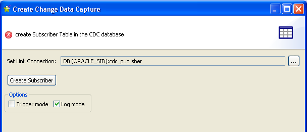

|
Component family |
Databases/Oracle | |
|
Function |
tOracleCDC extracts source system data that has changed since the last extraction and transports it to another/other system(s). | |
|
Purpose |
tOracleCDC addresses data extraction and transportation needs. tOracleCDC only extracts the changes done to the source operational data and makes them available to the target system(s) using database CDC views. | |
|
Basic settings |
Property type |
Either Built-in or Repository. |
|
|
|
Built-in: No property data stored centrally. |
|
|
|
Repository: Select the repository file in which the properties are stored. The fields that follow are completed automatically using the data retrieved. WarningReset the DB type by clicking the relevant button to select the CDC connection. |
|
|
Use an existing connection |
Select this check box and in the Component List click the relevant connection component to reuse the connection details you already defined. NoteWhen a Job contains the parent Job and the child Job, if you need to share an existing connection between the two levels, for example, to share the connection created by the parent Job with the child Job, you have to:
For an example about how to share a DB connection across Job levels,see Talend Data Integration Studio User Guide. |
|
|
Connection type |
Drop-down list of available drivers. |
|
|
DB Version |
Select the Oracle version in use |
|
|
Host |
Database server IP address. |
|
|
Port |
DB server listening port number. |
|
|
Database |
Name of the database. |
|
|
Oracle schema |
Name of the oracle schema. |
|
|
Username and Password |
DB user authentication data. |
|
|
Schema using CDC and Edit Schema |
A schema is a row description, i.e., it defines the number of fields to be processed and passed on to the next component. The schema is either Built-in or stored remotely in the Repository. |
|
|
|
Built-in: The schema is created and stored locally for this component only. Related topic: see Talend Data Integration Studio User Guide. |
|
|
|
Repository: The schema already exists and is stored in the Repository, hence can be reused. Related topic: see Talend Data Integration Studio User Guide. WarningReset the DB type by clicking the relevant button to select the schema of the CDC connection. |
|
|
Table using CDC |
Select the source table from which changes made to data are to be captured. |
|
|
CDC Log Mode |
Select this check box if you want to use Oracle Redo log to capture the changes done on data. For more information on Redo log mode, see Talend Data Integration Studio User Guide. |
|
|
Subscriber |
Enter the name of the application that will use the change table if you use the Trigger mode to capture changes done on data. WarningThe Subscriber field is not available if you use the Redo log mode because this mode allows access to the changed data for only one subscriber. |
|
|
Events to catch |
Insert: Select this check box to catch the data inserted in the change table since the last extraction. Update: Select this check box to catch the data updated in the change table since the last extraction. Delete: Select this check box to catch the data deleted in the change table since the last extraction. |
|
|
Limit |
Maximum number of consumed rows a subscriber can recover from the change table, per execution. WarningThe Limit field is not available in CDC Log Mode. |
|
Advanced settings |
Keep data in CDC Table |
Select this check box to keep the changes made available to one or more target systems, even after they have been consulted. |
|
|
Use cursor |
Select this check box to specify the number of rows you want to work with at at any given time. This option optimises performance. |
|
|
Trim all the String/Char columns |
Select this check box to delete any spaces found at the beginning or end of fields, in all of the columns containing character strings. |
|
|
Trim column |
Remove leading and trailing whitespace from defined columns. NoteClear Trim all the String/Char columns to enable Trim columns in this field. |
|
|
tStatCatcher Statistics |
Select this check box to collect the log data at component level. |
| Enable parallel execution |
Select this check box to perform high-speed data processing, by treating multiple data flows simultaneously. In the Number of parallel executions field, either: - Enter the number of parallel executions desired. - Press Ctrl + Space and select the appropriate context variable from the list.
For further information, see Talend Data Integration Studio User Guide. WarningThe Action on table field is not available with the parallelization function. Therefore, you must use a tCreateTable component if you want to create a table. WarningWhen parallel execution is enabled, it is not possible to use global variables to retrieve return values in a subjob. | |
|
Usage |
This component is used as a start component. It requires an output component and row Main link. | |
The following Java scenario creates a three-component Job that populates a data warehouse. A tOracleInput component reads your client data stored in the CLIENT table. A tMap component allows you to modify this data and the modifications are transmitted to the Leadfact table in the database through a tOracleOutput component.
Drop the following components from the Palette onto the design workspace: tOracleInput, tMap, and tOracleOutput.
Connect the three components using Row Main links. Click the link between tMap and tOracleOutput and name it leadfact.

Double-click tOracleInput to display its Basic settings view and define its properties.

Set Property Type to Repository and then select the connection to the TALEND database that holds the information about your clients. The connection details will display automatically in the corresponding fields.
Note
If you have not stored the DB connection details in the Metadata entry in the Repository, select Built-in in the property type list and set the connection details manually.
Set Schema to Repository and click the three-dot button to select the schema of the CLIENT table stored in the Metadata folder.
Related topics: see Talend Data Integration Studio User Guide.
In the Table Name field, enter the name of the table holding the information you want to modify, CLIENT in this example.
Click Guess Query to retrieve all data from your table.
Double-click the tMap component to open the Map Editor. Notice that the input area to the left is already filled with the metadata of the input component.

Drag the fields in the input zone to the fields in the leadfact table in the output zone. For more information regarding data mapping, see Talend Data Integration Studio User Guide.
Click OK to validate the operation.
In the design workspace, double-click tOracleOutput to display its Basic settings view and define its properties.

Set Property Type to Repository and then select the cdc_data connection to the data warehouse. The connection details will display automatically in the corresponding fields
Note
If you have not stored the data warehouse connection details in the Metadata folder in the Repository tree view, select Built-in in the property type list and set the connection details manually.
Related topics: see Talend Data Integration Studio User Guide.
In the Table Name field, enter the name of the table you want to populate with modified data, LEADFACT in this example.
Save your job and press F6 to create and populate the LEADFACT table in the data warehouse.
Warning
Before modifying data in the LEADFACT table and retrieving these modifications using the tOracleCDC component, you must activate the Redo log mode in the Oracle database that holds the table to monitor. For more information on how to activate the Redo log mode, see Talend Data Integration Studio User Guide.
This scenario is based on the preceding one. It continuously populates and modifies the data stored in the LEADFACT table, and retrieves and saves, every night, these modifications in a dedicated table using the CDC function. These modifications could be then extracted by the various concerned departments.
Before being able to retrieve modified data from the LEADFACT table, you must:
first set up the DB connection dedicated to CDC,
second, set up a DB connection to the source data and identify the table to catch,
finally, set the connection between the CDC and the data.
To do that:
In the Repository tree view and under Metadata, create a connection to your database dedicated to CDC, cdc_publisher in this scenario.
Note
Ensure that the DB connection for CDC is on the same server with the source data to which changes are to be captured.
In the Repository tree view and under Metadata, create a connection to the source data warehouse and identify the table to catch, LEADFACT in this scenario.
Right-click the connection to the orcle database and select Retrieve schema from the drop-down menu to retrieve the schema of the table to catch.
Right-click CDC Foundation of the cdc-data connection and select Create CDC in the drop-down menu.
The [Create Change Data Capture] dialog box displays
Click the three-dot button next to the Set link Connection field and select the connection that corresponds to CDC, cdc_publisher in this example.
In the Options area, select the Log mode check box.
Click Create Subscriber. The [Create Subscriber and Execute SQL Script] dialog box displays.

Click Execute and then Close to close the dialog box.
Click Finish to validate the creation of the subscriber table.
In the CDC Foundation folder, the relevant subscriber table displays.
You must specify which table the subscriber wants to subscribe to and then
Right-click the LEADFACT schema of the cdc-data connection and select Add CDC in the drop-down list. The [Create Subscriber and Execute SQL Script] dialog box displays.
Note
For Oracle databases and in Talend Data Integration Studio version 3.2 or subsequent versions, the CDC system creates an alias for the source table(s) monitored. This avoids problems relating to identifier length upon creation of the table of changes and its associated view. For CDC systems which are already in place, the table names are maintained.

Click Execute and then Close to validate the subscription.
In the CDC Foundation folder, the two created tables display and the schema node of the catched table is marked with a green CDC symbol.

Modify the data of your clients in the LEADFACT table, for example, convert all customer names to upper case.
Double-click the tMap component and enter
row1.LASTNAME.toUpperCase()in front of the CLASTNAME column to convert all customer names to upper case.Click Ok.
Double-click the tOracleOutput component.
In the Action on table field, select None.
In the Action on data field, select Insert or update to insert or update table data.
Save your Job and press F6 to execute it.
To view all changes done on data, right-click the LEADFACT table and select View All Changes to open the relevant dialog box.
After setting up the CDC environment, you can now design a job using the Oracle CDC component to incrementally extract the change data from the LEADFACT table. To do that:
From the Palette, drop the OracleCDC and tLogRow components to the design workspace.
Link the two components using a Row Main link.

Double-click tOracleCDC to open its Basic settings view and define its properties.

Set Property Type to Repository and then select the schema corresponding to your Oracle DB table, cdc_publisher in this scenario. The connection details will display automatically in the corresponding fields
Note
If you have not stored the data warehouse connection details in the Metadata folder in the Repository tree view, select Built-in in the property type list and set the connection details manually.
In the Schema using CDC field, select Repository and then select the schema of the LEADFACT table stored in the Metadata folder.
In the Table using CDC field, enter the name of the table captured by the CDC, in this scenario Leadfact.
In the Events to catch field, select the check boxes corresponding to the type of the modified data the subscriber will extract. In this scenario, select the three check boxes for the three subscribers.
Double-click tLogRow to display its Basic settings view and define its properties.

Click the Sync columns button to retrieve the schema from the preceding component.
Click Edit schema to open the schema dialog box.
In the TALEND_CDC_CREATION_DATE line of the Date Pattern column, enter between brackets the desired date format:
"yyyy-MM-dd".Save your Job and press F6 to execute it.
In the Redo log mode, changes done on data are indicated in the following way: modifications are equal to first, an “update and delete” operation (UO), and then to an “update and insert” operation (UN). Thus, client data displays twice:
- First, data is deleted (UO).
-Second, data is inserted (UN).
Once these modifications are extracted, they are no more available in the modified table. To verify their extraction, right-click the LEADFACT table catched by the CDC and then select Views All Changes. The extracted changes do not display anymore.
For another CDC scenario using the Trigger mode, see the section called “Scenario 2: Retrieving modified data using CDC”.